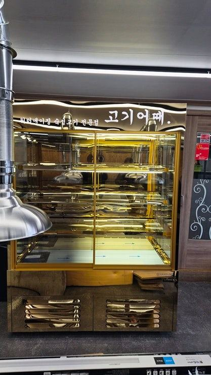
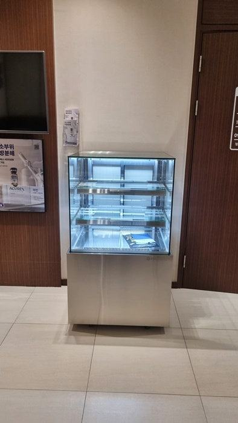
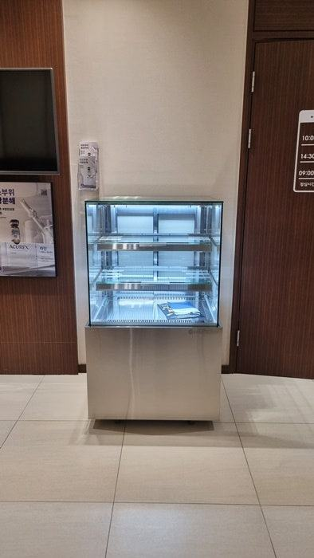
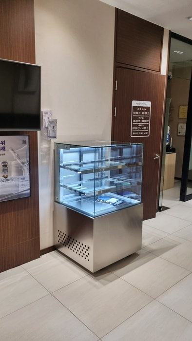
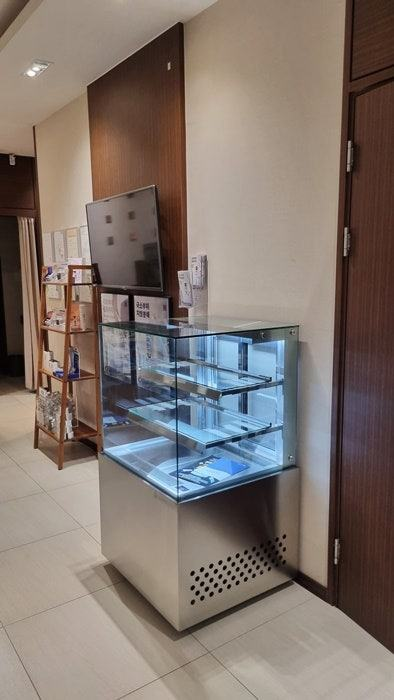
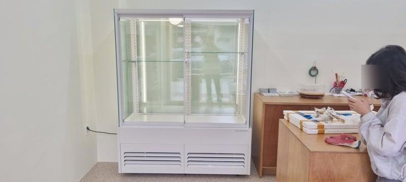
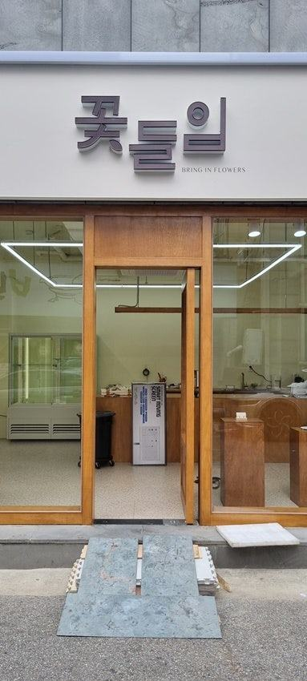
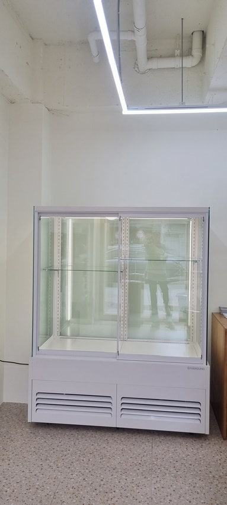

와인(음료)쇼케이스
업소용음료수냉장고 소음, 정상 소리와 점검이 필요한 소리 구분법

업소용음료수냉장고에서 켜지고 꺼질 때 딸깍 소리, 일정한 팬 소리, 냉매 흐르는 소리는 정상이고, 덜덜거리는 진동이나 쇠 긁는 소리, 쉬지 않고 계속 도는 소리는 점검 신호입니다. 먼저 수평과 벽 간격, 응축기 먼지를 확인하고, 그래도 이어지면 소리를 녹음해 A/S를 접수하세요.
안녕하세요. 카페와 소형 매장용 음료 쇼케이스를 맞춤으로 만드는 한성쇼케이스입니다.
작은 카페나 1인 매장을 운영하시는 사장님들께 음료 냉장고 소리는 생각보다 큰 스트레스입니다. 손님과 가까운 계산대 옆에 서 있다 보니 웅웅거리는 소리가 대화를 방해하고, 조용한 오후 시간에는 더 크게 들리죠.
그런데 소리가 난다고 다 고장은 아닙니다. 냉장고가 원래 내는 소리도 있고, 설치 상태만 바로잡아도 줄어드는 소리도 많습니다.
반대로 그냥 두면 큰 고장으로 이어지는 소리도 있고요.
오늘은 업소용음료수냉장고 소음을 정상 소리와 점검이 필요한 소리로 나눠 보고, 매장에서 직접 해 볼 수 있는 조치와 처음 고를 때 소음을 줄이는 기준까지 정리해 드리겠습니다.
1. 걱정하지 않아도 되는 소리
콤프레셔가 켜지고 꺼질 때 나는 딸깍 소리, 내부 팬이 도는 일정한 바람 소리, 냉매가 배관을 지나며 나는 졸졸 소리는 정상 작동음입니다.
제상이 끝난 뒤 물이 받침으로 떨어지는 소리도 마찬가지입니다.
더운 날이나 손님이 몰려 문을 자주 연 뒤에는 콤프레셔가 평소보다 오래 돌아 소리가 길게 이어질 수 있습니다.
문을 닫아 두고 시간이 지나 다시 조용해진다면 걱정하지 않으셔도 됩니다.
- 켜지고 꺼질 때 딸깍 소리
- 일정한 팬 바람 소리
- 냉매 흐르는 소리, 제상수 떨어지는 소리
2. 점검이 필요한 소리
냉장고 전체가 덜덜 떨리며 울리는 소리는 수평이 맞지 않거나 바닥이 고르지 않을 때 자주 납니다. 내부 팬 쪽에서 쇠 긁는 소리나 탁탁 부딪히는 소리가 나면 팬에 성에가 붙었거나 이물질이 끼었을 가능성이 있습니다.
가장 주의할 것은 문을 닫아 두어도 콤프레셔가 쉬지 않고 계속 도는 경우입니다. 열이 제대로 빠지지 못하거나 냉각 성능이 떨어졌다는 신호일 수 있어, 음료가 덜 시원해지기 전에 점검을 받는 것이 좋습니다.
문 패킹이 들떠 문이 덜 닫혀도 냉기가 새어 콤프레셔가 오래 돌고 소리가 길어집니다. 소리가 커졌다면 문 가장자리를 손으로 따라가며 바람이 새는 곳이 없는지도 함께 확인해 보세요.


3. 매장에서 먼저 해 볼 조치
다리 높이를 조절해 수평을 맞추고, 냉장고 뒤나 옆이 벽에 딱 붙어 있지 않은지 보세요. 열이 빠질 틈이 없으면 콤프레셔가 오래 돌면서 소리도 커집니다.
아래쪽 응축기 필터에 먼지가 쌓였다면 전원을 끄고 털어 내 주세요.
선반 위 병음료끼리 부딪히며 나는 짤랑 소리도 의외로 많습니다. 선반이 제자리에 끼워져 있는지, 병 사이에 간격이 있는지 확인해 보세요.
외부 패널 나사가 풀려 울리는 경우도 있으니 손으로 눌러 보며 소리가 멈추는지 보시면 됩니다.
- 다리 높이로 수평 맞추기
- 뒤·옆 벽과 간격 띄우기
- 응축기 필터 먼지 청소
- 선반 고정과 병 간격 확인
4. 처음 고를 때 소음 줄이는 법
손님 가까이에 둘 음료 냉장고라면 처음부터 저소음 콤프 옵션이 있는지, 열이 빠지는 방향이 손님 쪽인지 벽 쪽인지 확인해 보세요.
설치 자리가 좁을수록 열이 빠지는 공간을 미리 계산해 크기를 정해야 소음이 덜합니다.
맞춤 제작이라면 쓰지 않는 기능은 빼고 필요한 부분에 집중할 수 있어, 작은 매장 구조에 맞춘 배치가 가능합니다.
체크리스트
- 소리가 언제, 얼마나 오래 나는지 기록
- 수평과 벽 간격
- 응축기 필터 먼지
- 선반·병 떨림
- 멈추지 않고 계속 도는지
- 소리 녹음 후 A/S 접수
1인 카페 창업자의 음료쇼케이스 맞춤 상담
개인 카페를 처음 여시는 사장님들은 대형 가전을 한 번 사면 오래 써야 하니 조건을 꼼꼼히 비교하느라 지치기 쉽습니다.
그래서 상담과 견적 과정에서 매장에 어울리는 음료쇼케이스를 함께 찾고, 쓰지 않을 기능은 과감히 빼서 비용을 줄이는 방향으로 진행했습니다.
공장에서 직접 만들고 시공까지 맡기 때문에 급하게 필요하신 경우에도 납품과 시공 일정을 사장님 일정에 맞춰 조율할 수 있었고, 이후 문제가 생기면 직접 방문하는 A/S로 이어지도록 안내해 드렸습니다.





자주 묻는 질문
밤에만 소리가 더 크게 들리는데 고장인가요?
매장이 조용해지면 같은 소리도 크게 느껴지는 경우가 많습니다. 다만 밤새 콤프레셔가 멈추지 않고 돈다면 점검이 필요하니 작동 시간을 확인해 보세요.
새로 들인 음료 냉장고인데 처음 며칠 소리가 커요.
설치 직후에는 내부 온도를 내리느라 오래 돌 수 있습니다. 며칠이 지나도 계속되거나 진동이 심하면 수평과 설치 간격을 먼저 확인하고 A/S에 문의해 주세요.
소음 때문에 냉장고 위치를 옮겨도 되나요?
옮길 수 있지만 옮긴 직후 바로 전원을 켜기보다 잠시 세워 둔 뒤 켜는 것이 안전합니다. 새 자리에서도 벽 간격과 열 배출 공간을 확보해 주세요.
매장 조건에 맞춰 만드는 한성쇼케이스
원하시는 제품 사진과 설치할 공간 사진만 보내 주셔도 매장에 맞는 구성을 추천해 드립니다.
- 전국 240여 개 A/S 전담 센터 운영
- 본사 대량 자재 매입으로 품질 대비 합리적인 가격
- 유럽제·삼성 냉각 콤프레셔 적용
- 국내 최초 쇼케이스 전문 디자이너 상주
매장 폭과 원하는 진열 구성을 알려 주세요. 실측과 견적을 안내해 드립니다.
031-986-2458